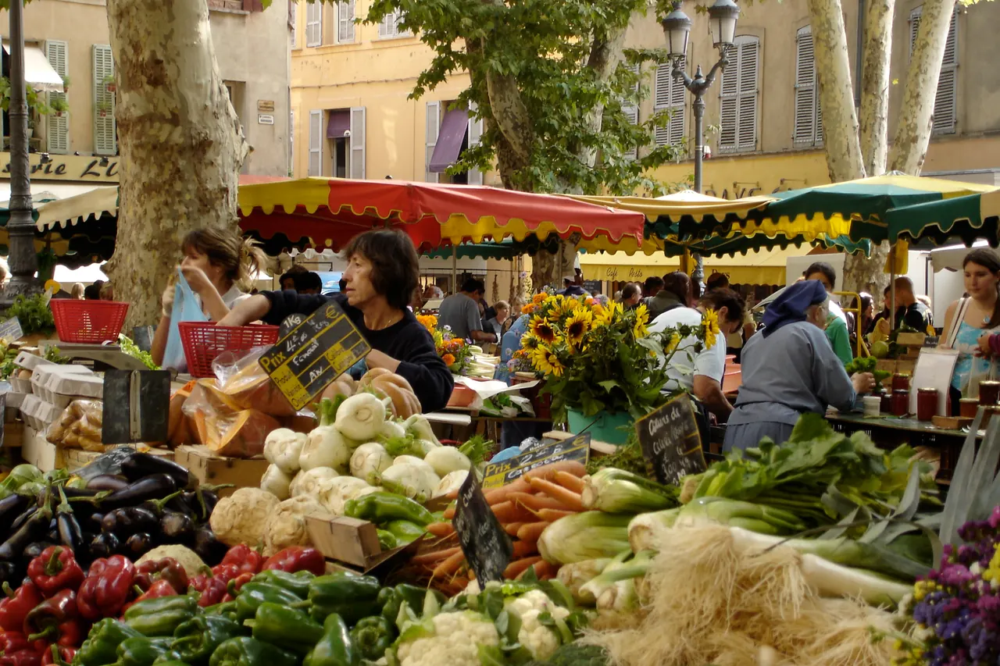

{kind=link}

Atelier des Lauves
세잔의 마지막 작업실이다.

플라스 리셸므에서 식료품·꽃 시장이 매일 열리고, 화·목·토 오전에는 플라스 데 프레셰르와 주변 거리에서 식료품·공예·리넨·라벤더를 파는 전면 프로방스 시장이 열린다.
| 운영시간 | Richelme 식품시장 매일 08:00–13:00 · 화·목·토 큰장(직물·공예·골동) |
|---|---|
| 휴무 | Place Richelme 청과시장은 연중무휴 매일 08:00–13:00. Place des Prêcheurs 시장 요일은 공식 페이지 표기가 엇갈려 미확정 — 재확인 필요 |
| 예약 | 예약 불필요 — 노천시장 |
| address | Place Richelme, 13100 Aix-en-Provence |
📍 Place Richelme, 13100 Aix-en-Provence · 🕐 Richelme 식품시장 매일 08:00–13:00 · 화·목·토 큰장(직물·공예·골동) · 휴무 Place Richelme 청과시장은 연중무휴 매일 08:00–13:00. Place des Prêcheurs 시장 요일은 공식 페이지 표기가 엇갈려 미확정 — 재확인 필요 · 예약 불필요 — 노천시장
플라스 리셸므에서 식료품·꽃 시장이 매일 열리고, 화·목·토 오전에는 플라스 데 프레셰르와 주변 거리에서 식료품·공예·리넨·라벤더를 파는 전면 프로방스 시장이 열린다. 오후 1시경에 파장한다.
일정이 이미 맞아 있다.
| Day | 날짜 | 요일 | 큰 시장 |
|---|---|---|---|
| 13 | 9/10 | 목 | ○ |
| 15 | 9/12 | 토 | ○ |
13시에 파장한다는 것 오전 일정이다. 늦게 가면 좌판을 접는 중이다. 9시–11시가 본편이다.
두 시장의 성격이 다르다 리셸므는 매일 서는 식료품 시장이고, 프레셰르는 주 3회의 종합 시장이다. 장을 볼 거면 리셸므, 구경할 거면 프레셰르다.
리셸므 광장은 플라타너스 그늘 아래 좌판이 서는, 프로방스 시장의 교과서 같은 화면이다. 이 광장에서 시장이 선 지 수백 년이고, 세잔의 아버지가 모자 가게를 하던 거리도 이 시장권이었다 — 화가의 도시이기 이전에 장사의 도시였다는 사실이 여기서 보인다. 염소 치즈·올리브·제철 과일이 리셸므의 강점이고, 프레셰르 쪽은 리넨·도기·라벤더 같은 프로방스 공예 좌판이 더해진다.
우리 4박에서 시장은 관광이 아니라 부엌 보급선이다 — 목요일(9/10) 시장에서 산 것으로 이틀의 아침을 만들고, 토요일(9/12) 시장은 아틀리에 방문 전의 아침 산책을 겸한다. 파장 후의 광장은 카페 테라스로 변신하니, 오전의 시장과 오후의 광장을 둘 다 보게 된다. 시장 가방 하나를 숙소에서 챙겨 가는 것이 비닐봉지 열 개보다 낫다. 숙소가 시장까지 도보권이라는 것이 이 4박에서 아파트형 숙소를 고른 이유의 절반이다.
세잔의 마지막 작업실이다.

세잔이 20세이던 1859년에 아버지가 자스 드 부팡을 사들였고, 60세이던 1899년에 팔았다.

칼랑크 국립공원은 유럽에서 유일하게 육지·해양·도시 근교를 아우르는 공원이다.
세잔이 1890년대 후반 오두막을 빌려 두고 연작을 그린 옛 채석장이다

마르세유의 소란이 부담스러운 날을 위한 완전 대체안이다.

'그랑 쿠르'는 1649년에서 1651년 사이, 옛 성벽 자리에 조성됐다.